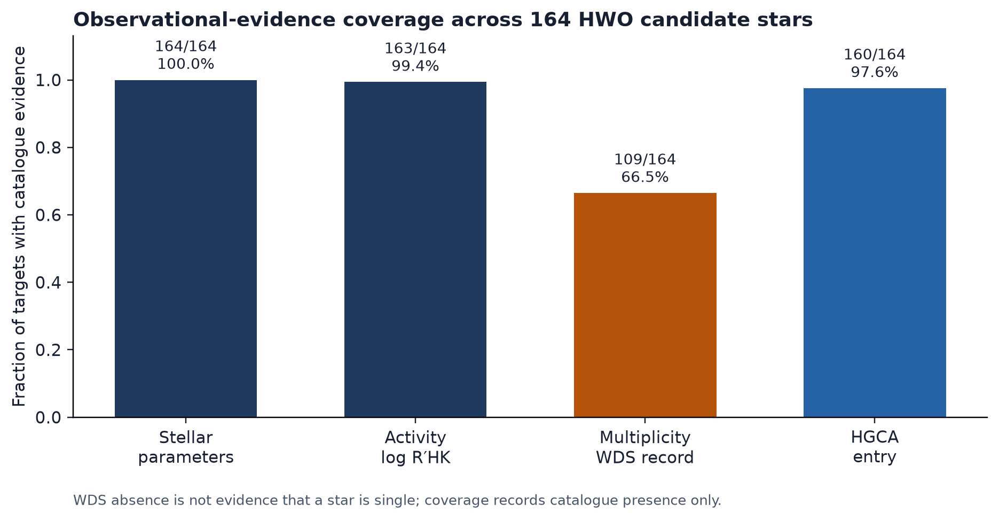
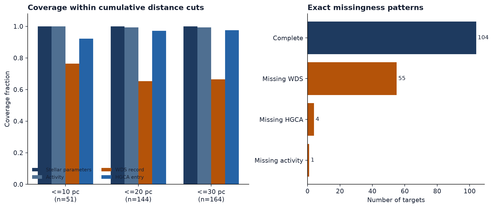
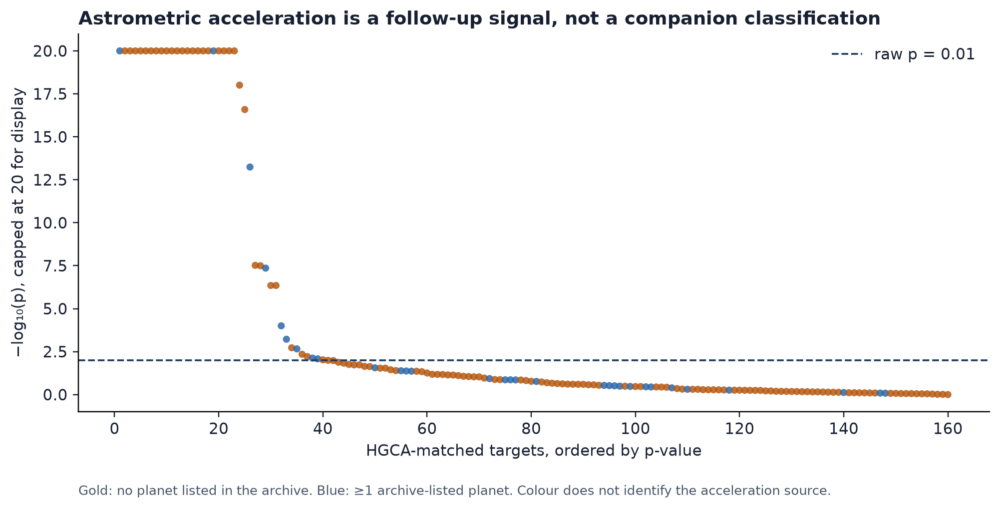

Catalogue cross-match · release 0.3 · 4 October 2026
Which prospective HWO stars still lack essential catalogue evidence?
A reproducible audit of 164 stars from the NASA Exoplanet Archive’s Direct Imaging ExEP Mission Star List, cross-matched to the Hipparcos–Gaia Catalog of Accelerations.
Interpretation boundary. Catalogue presence is not measurement quality. No WDS record is not evidence that a star is single. An HGCA acceleration does not identify a companion’s mass or nature.
01
Coverage is high—but uneven
Stellar parameters and activity are nearly complete. Multiplicity evidence, defined narrowly as a Washington Double Star catalogue record, is the dominant gap.

Exact pattern
One gap explains most incomplete rows
Of 60 targets missing at least one category, 55 lack only a WDS record. Four lack only an HGCA entry; one lacks only activity.
Distance check
The nearby subset retains the gap
WDS-record coverage is 39/51 (76.5%) within 10 pc and 94/144 (65.3%) within 20 pc. These cumulative cuts are descriptive, not population inference.

02
Acceleration is evidence for follow-up—not classification
For 160 targets with an HGCA entry, χ² is converted to a two-degree-of-freedom survival probability. Benjamini–Hochberg adjustment is performed over those 160 non-null tests.

This is not a discovery claim. “No archive-listed planet” does not mean “no companion.” Acceleration may arise from a stellar, brown-dwarf, or planetary-mass companion and requires external characterization.
03
Inspect every result
The exact source snapshots, checksums, per-target matrix, aggregate tables, and code are versioned together.
04
Scope and limitations
- The sample is exactly the 164-star Mamajek & Stapelfeldt (2024) list—not every plausible HWO target.
- WDS presence measures visual-binary catalogue coverage; it cannot rule out unresolved or spectroscopic companions.
- Distance is shown as a transparent stratifier, not as a complete scientific-value model.
- No official relationship with NASA, STScI, JPL, ExEP, CDS, or the HWO programme is implied.
Primary sources: Mamajek & Stapelfeldt (2024), ApJS 272, 32; Brandt (2021), ApJS 254, 42. Full provenance and claim-by-claim validation are included in the repository.